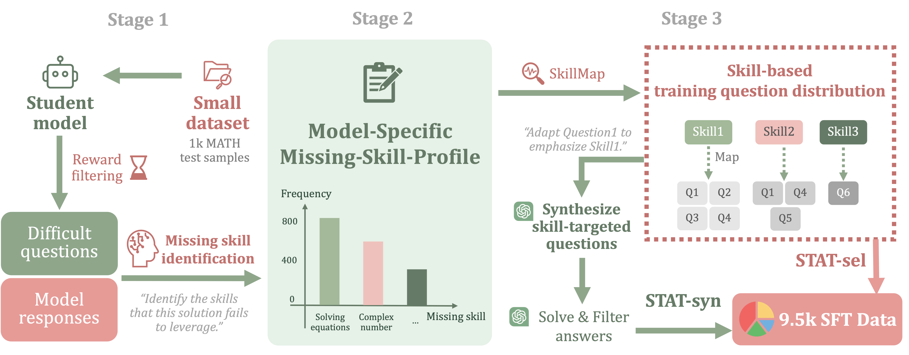

Gain on over-trained dataset (hendrycks MATH)
+7.5%
STAT squeezes out extra performance on MATH, even though models are already over-trained on it.
Gain on out-of-distribution dataset
+4.6%
STAT generalizes to 8+ OOD datasets, including the more challenging ones (AMC23, AIME24/25, ...).
Gain on subsequent RL training
+4.0%
The gain from STAT persists and manifests during subsequent RL training.
Language models often show little to no improvement (i.e., “saturation”) when trained via vanilla supervised fine-tuning (SFT) on data similar to what they saw in their training set (e.g., MATH). We introduce a new fine-tuning strategy, STAT, to train such a student model by using the metacognition ability of a stronger large language model (LLM) as the teacher. The teacher uses the task dataset to create a list of skills needed for the task, and then labels each data point with its required skills. By monitoring the student's answers, the teacher creates a Missing-Skill-Profile for the student, tracking how often they failed to apply each skill in their responses. We use this idea to build a skill-targeted adaptive training set.
Method Overview: Our pipeline starts with a list of relevant skills for the problem (SkillMap) created via teacher metacognition, and performs the following three stages. First, we use the teacher to evaluate the student model on a small validation set of questions and use a reward model to identify the questions that are difficult for the student. Second, we create a Missing-Skill-Profile by using the teacher to check the missing skills in the model responses. Our first method STAT-Sel simply up-weights training examples using the Missing-Skill-Profile; in effect, this guides the student to focus on their deficiencies. Our second (more expensive) method STAT-Syn uses the teacher to generate synthetic training data using in-context examples from the validation set associated with a list of deficient skills in Missing-Skill-Profile.
Key Results: Applying STAT-Sel and STAT-Syn teaching on Llama and Qwen models with the popular MATH data shows the following:
We conduct extensive ablations to pinpoint the success of our proposed methods. A fine-grained skill-level analysis reveals that even when models have been extensively trained on MATH, they struggle on basic operation skills such as basic algebra. By explicitly targeting these basic skills, our methods reduce such errors and improve generation performance, including on out-of-distribution tasks. In contrast, alternative approaches such as embedding-based methods often underperform, as they do not explicitly address these skill gaps. Thus, our findings highlight the importance of skill-targeted adaptive training for advancing model performance.
@article{he2025skilltargetedadaptivetraining,
title={Skill-Targeted Adaptive Training},
author={Yinghui He and Abhishek Panigrahi and Yong Lin and Sanjeev Arora},
journal={arXiv preprint arXiv:2510.10023},
year={2025},
url={https://arxiv.org/abs/2510.10023},
}